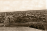
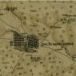
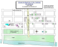
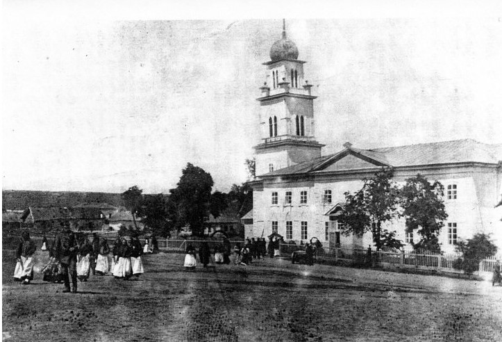
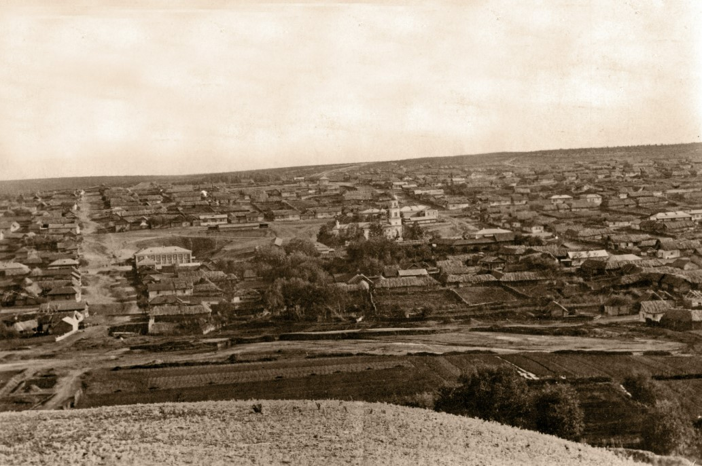
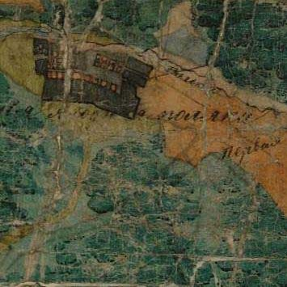
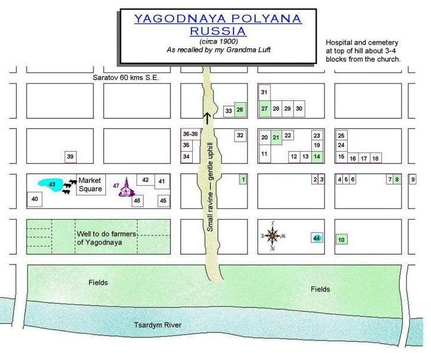

Yagodnaya Polyana (or “Berry Meadow”), Saratov, Russia
| Latitude | 51°58'15.58"N |
| Longitude | 45°36'31.65"E |
| Country | Russia |
| Enclosed By | |
|---|---|
| Saratov | |
| Place Encloses |
Media







Notes
Note
History:
Yagodnaya Polyana was founded on 16 September 1767 by colonists who had been recruited by the Government. Its name means "berry meadow" in Russian.
Deportation of the Volga German population of Yagodnaya Polyana (which was almost 100% of the population) began on 5 September 1941. The families were taken to a nearby train station by truck and departed on Trains No. 785 & 786 (and perhaps others) on September 7th & 8th. These two trains arrived in the village of Pavlodar in Kazakhstan on 18 September 1941. From there they were transported to nearby villages.
Ruins of a flour mill built in 1912 are still visible in Yagodnaya Polyana today.
At various times during its history, the settlement was known by the German names of Beerenfeld or Baum, but most descendants call it Yagoda.
Today, what remains of the former colony of Yagodnaya Polyana is still known by its Russian name of Yagodnaya Polyana.
Church:
The Lutheran parish in Yagodnaya Polyana was founded in 1785 as an independent parish with a resident pastor.
In 1858, a new church was built in the Kontor style. Religious services were discontinued in the 1930s. The steeple was removed during the Soviet era and the building currently serves as a community center for the village.
Place Map
Source References
-
Yagodnaya Polyana
-
- Page: Yagodnaya Polyana
-
References
- Germann, Elizabeth (1766)
- Family of Hartmann Scheuermann, Johann and Germann, Elizabeth
- Hartmann Scheuermann, Johann (1766)